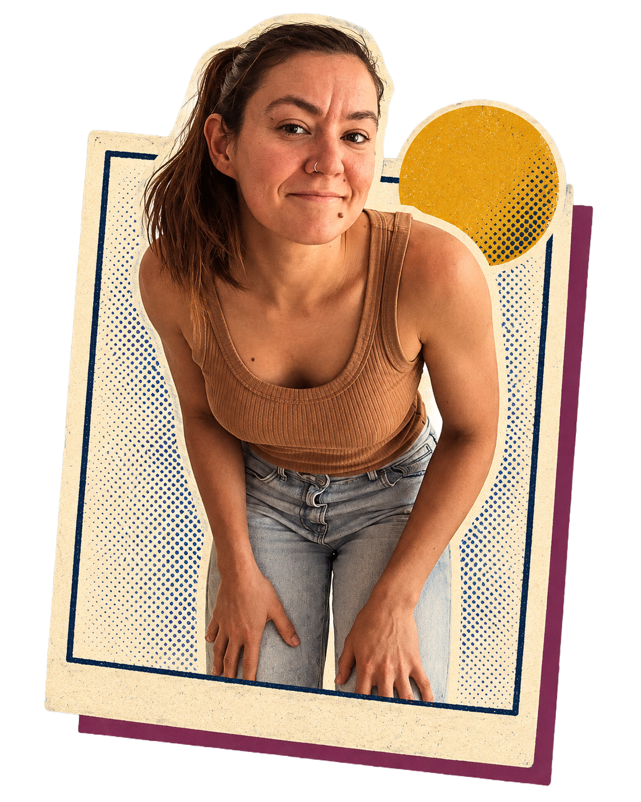
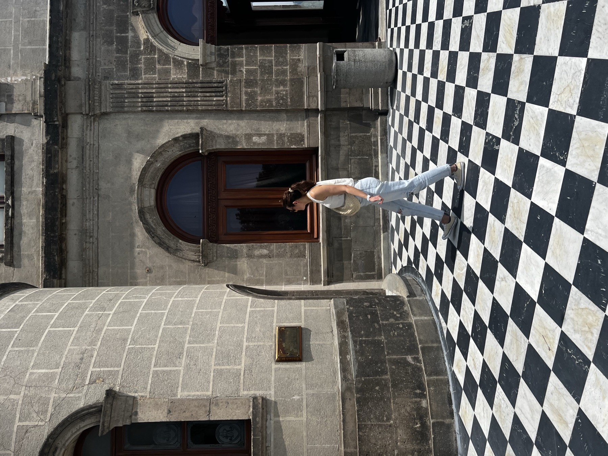
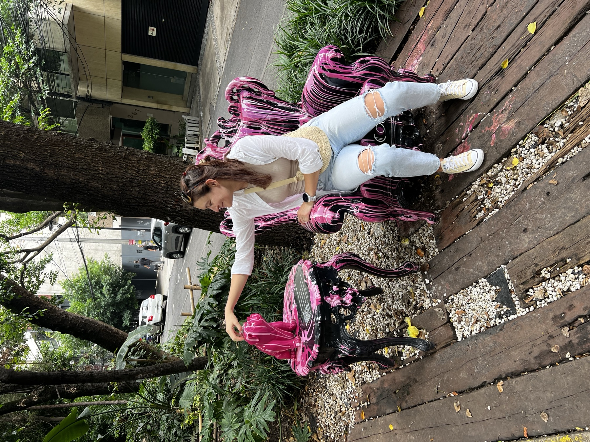

Time flies. One minute it is the first of the month; the next, it is nearly over and the plan you meant to make is still in your head. If you want some gentle accountability for what you are creating, Inner Sky is for you.
Explore Inner Sky →You did
everything
right.
So why does this life not feel like yours?
You do not need more positive thoughts, another self-help book, or someone telling you who to be. You need space to hear yourself again, with support to make choices that feel like yours.

Somatic coach & Human Design guide.

I help you hear
yourself again.
I work with millennial women who followed the recipe for success and feel more lost than ever. Together, we slow things down enough for you to notice what your body is saying, meet the parts of you that learned to perform, and reconnect with the voice underneath all the shoulds.
Somatic practice helps us work with what is happening now, not only explain it. Human Design gives us insights and experiments to play with. I am here to help you trust yourself again, especially when you are tempted to give up or look for someone else to tell you who to be.
It’s not about making your life look enviable on IG. The point is to feel present, alive and good inside your body.
Training & credentials
- Human Design: Chart Alchemy, Sort of Spiritual, 2026
- The Human Design Variables, Vaness Henry, 2025
- Somatic Practitioner Certification, The Core Rising® Method, 2025
- Yoga & Somatics for Healing & Recovery (100h), Somatic Therapeutic Yoga, 2024
- Embodied Coaching™ Practitioner, Academia de Coaching Somático, 2024
- PSYCH-K® Basic & Advanced, 2021
- 200-hour Elemental Yoga Teacher Training, Vivid Yoga APT, 2017
What I believe
You are allowed to want a life that feels fully yours.
Your body is part of the conversation, even when your mind already has a plan for the next 5 weeks.
The parts of yourself you learned to hide are not ugly. They are waiting to be met with curiosity.
You do not need a perfect mindset or another person’s method. You need room to hear yourself.
Different ways
back to yourself.
Explore your design as a reflective lens: begin with an immediate-download PDF for your Type, or bring one personal question for a focused interpretation and practical experiment.
Explore Human Design →A private space to work with what is present, reconnect with your body and emotions, and build the self-trust to follow your own way. Bonus: the Somatic Pause app to use between sessions.
Explore 1:1 support →The truth bit
I am not here to give you answers.
You are the expert on your life. I can help you notice the stress responses, stories and inherited expectations that make your own voice harder to hear. Then we practise listening without immediately talking yourself out of what you know. But I will never tell you what you should do. Only you know.
More about me...
I am usually happiest walking somewhere green, imagining a future Mediterranean permaculture garden with more goats than is advisable, or making a joke halfway through a serious conversation.
Instagram is where I share more of the lived, unfinished version of the journey that is my life.
